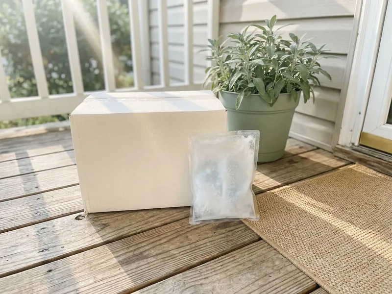

Wellness & Longevity in Atlantic City, NJ
Provider-reviewed wellness care with clear labeling of FDA status and pharmacy shipping across Atlantic City, NJ.
- Online visit, no waiting room
- Licensed provider review
- Evidence explained plainly
- Ships from a US pharmacy

- Licensed New Jersey Medical Providers
- Personalized Treatment Plans
- Discreet Home Delivery
- Ongoing Medical Support
Online Wellness & Longevity Care for Adults in Atlantic City, NJ
Atlantic City Weight Loss labels every treatment honestly. Some are FDA-approved drugs used off-label. Others are compounded or research-informed therapies that are not FDA-approved, and your provider explains which is which before writing anything.
What the program includes:
- Low dose naltrexone, naltrexone gum, ivermectin, mebendazole and peptides
- Opioid, liver and drug interaction screening before prescribing
- Plain-language notes on FDA status and evidence

Talk through wellness and longevity options online in Atlantic City, NJ.
Answer a few questions online about your goals, symptoms and medications, and a licensed provider will review them.
Related Wellness & Longevity Options in Atlantic City, NJ
Longevity, immune and wellness treatments in Atlantic City, NJ, each reviewed case by case by a licensed provider.


helped
Why patients choose us for Wellness & Longevity in Atlantic City, NJ
Not every option has the same level of proof. Clear information lets you weigh benefit against uncertainty.
- Honest labeling, Each treatment's FDA status and evidence are explained before you start.
- Goal matched, Your provider picks an option based on what you want to address.
- Interaction checks, Opioids, liver health and current medications are reviewed every time.
Anywhere in Atlantic City
You skip the trip for a visit that is mostly questions and answers. You can share labs and check in from home.
Licensed care team
Oakwell MD providers will say no when a treatment does not fit, when the evidence is too thin for your situation, or when a symptom needs hands-on care from a local clinician first. Some cases get referred. You will get the reason.
Safety first
Screening covers opioid use, liver and kidney health, pregnancy, breastfeeding, travel history and every medication you take, since naltrexone cannot be combined with opioids at all. Opioid use is a hard stop for naltrexone. Compounded products, including peptides and naltrexone gum, are not FDA-approved.
The care standards behind every Atlantic City plan
Atlantic City Weight Loss runs on the Oakwell MD clinical model: licensed providers, US pharmacies that meet state and federal compounding rules, and follow-up that does not stop when the package arrives. Every treatment on this site goes through the same screening throughout Atlantic City, NJ.
How Wellness & Longevity Care Works in Atlantic City, NJ
How Wellness & Longevity Care Works in Atlantic City
Wellness and longevity care here means seven specific treatments, each tied to a goal such as chronic pain, a suspected parasitic infection, or interest in research-informed peptides. Your provider starts by understanding what you want to address and how long it has been going on. Evidence comes next. A few are approved drugs used in new ways, while others are compounded without FDA approval. Primary care stays in the picture.

Low Dose Naltrexone
Naltrexone is FDA-approved at 50 mg for alcohol and opioid use disorders, while low dose naltrexone, usually 1.5 to 4.5 mg at bedtime, is prescribed off-label. Researchers believe a short receptor block and lower inflammation may explain its effects. Studies are small. Trials have looked at fibromyalgia and some autoimmune conditions, with mixed but encouraging results. It cannot be taken with opioids.
Naltrexone Gum in Atlantic City
Naltrexone gum is a compounded form that delivers a small dose through the lining of the mouth, and some providers use it as a flexible, as-needed option to reduce cravings in specific situations. It is not FDA-approved. Research is limited. Your provider explains how and when to chew it, and how long to keep it in your mouth. Opioid use and liver problems are screened first.
Antiparasitic Protocol, Ivermectin and Mebendazole
Ivermectin is FDA-approved to treat certain parasitic worm infections such as strongyloidiasis and onchocerciasis, and it is also used for scabies and head lice. Mebendazole treats intestinal worms such as pinworm, roundworm, whipworm and hookworm. Travel history matters. The Antiparasitic Protocol is prescribed when symptoms, travel or exposure suggest an infection, with dosing based on the parasite. These are prescribed only for their anti-parasitic uses.
Anti-Aging and Immune Support Peptides in Atlantic City
Peptides are short chains of amino acids that act as signaling molecules, and our Anti-Aging Peptides and Immune Support Peptides are compounded, research-informed therapies that are not FDA-approved for these uses. Evidence ranges from early human studies to mostly laboratory research. Most are injected. Expect a tiny needle under the skin a few times a week. FDA rules on compounded peptides can change availability.
How a Provider Chooses Between Options
Chronic pain or inflammation may point toward low dose naltrexone, while a suspected parasitic infection based on symptoms, travel or exposure points toward ivermectin, mebendazole or the Antiparasitic Protocol. Peptides come up when your goal is longevity or immune support and you accept the uncertainty. Safety comes first. Labs or in-person care may be suggested before any prescription. Goal decides the starting point.
Side Effects and Safety in Atlantic City
Low dose naltrexone may cause vivid dreams, insomnia or headache in the first weeks, which often ease or improve with morning dosing. Ivermectin can cause dizziness, nausea or itching, and mebendazole may cause stomach pain or diarrhea. Peptides vary. Expect possible redness at the injection site, plus peptide-specific effects your provider explains. Report anything unusual.

Eligibility and Screening
Your provider asks about your goal, symptoms, travel, opioid use, alcohol, liver and kidney health, pregnancy and every medication you take before recommending anything. Opioids of any kind, even a cough syrup with codeine, cannot be combined with naltrexone. Pregnancy changes options. Antiparasitics are usually avoided during pregnancy. Liver disease needs a closer look.
Wellness & Longevity Treatment Near Me in Atlantic City, NJ
Finding a clinic near you that prescribes low dose naltrexone or peptides often means calling around, waiting weeks, and driving across Atlantic City for a short conversation. The online visit covers the same discussion. You skip the drive.
The provider needs your goal, your symptoms and how long they have lasted, any recent travel, and a complete list of medications, especially opioids or anything with codeine. Recent labs help. List every supplement too.
Many wellness questions are mostly conversation, which makes an online visit in Atlantic City a practical way to get a provider's view on the evidence and safety. You can start whenever it suits you. Check-ins happen online as well.
Is Wellness & Longevity right for you?
Five quick questions, then a licensed provider reviews your answers. No commitment.
Atlantic City Weight Loss at a glance
- Licensed providers serving Atlantic City, NJ and nearby
- Online visits, no office wait
- Discreet delivery to your door
- 4.9-star rated by 747+ Atlantic City-area patients
Atlantic City patients
- Population
- 38,464
- Visits
- Online, from anywhere in Atlantic City
- Delivery
- Atlantic City and communities nearby
- Nearby
- Vineland, Millville
Patients in Atlantic City, NJ choose an online clinic for wellness and longevity care because they get a provider's honest read on the evidence without a long wait or drive.
Atlantic City map
Everything we treat in Atlantic City, NJ
Weight loss is where most patients start. The same provider-reviewed, shipped-to-you model covers peptides, sexual health, hair, sleep and longevity.


How to Get Started With Wellness & Longevity Care in Atlantic City, NJ
Ten minutes of questions about your goals and health. A provider handles the rest.
Answer a Few Questions
Describe your goal, symptoms, travel and health history in a short online questionnaire. List every medication, especially opioids.
Provider Evidence Review
A licensed Oakwell MD provider checks interactions and explains what the evidence shows. They recommend an option, tests, or in-person care.
Treatment and Check-Ins
If prescribed, your medication ships from a licensed US pharmacy to your door. Check-ins track side effects and progress.
Frequently Asked Questions About Wellness & Longevity in Atlantic City
It fits adults with a specific goal, such as chronic pain, a suspected parasitic infection, or interest in research-informed peptides. The decision depends on your goal and health.
Compounded products and off-label uses are usually not covered by insurance. Generic ivermectin or mebendazole may be covered for confirmed infections, and HSA or FSA funds can sometimes be used.
Both treat parasitic worms, and ivermectin also treats scabies and head lice. They are prescribed only for these medical uses.
Pricing is shown after your provider review, since it depends on the treatment plan. Nothing is billed for medication until you accept it.
Not with opioids, including tramadol, codeine or oxycodone, since naltrexone blocks them and can trigger withdrawal. Ibuprofen and acetaminophen are generally okay.
You will hear why, which may mean an interaction, weak evidence for your goal, or a need for in-person care. You are not charged for medication you do not receive.
Testing is often recommended, such as a stool test or a tape test for pinworm. Clear exposure can sometimes skip testing.
The Anti-Aging and Immune Support Peptides offered here are compounded and not FDA-approved for these uses. You will hear what research exists before deciding.
What patients say about Atlantic City Weight Loss
Jordan M.
No awkward waiting room, no pharmacy counter. The chewable they recommended works and the package looked like anything else on the porch.
ED Treatment · Vineland, NJDaniel K.
Came for recovery after a shoulder injury, stayed for how thorough the screening was. They asked for labs, explained what BPC-157 can and cannot do, and never oversold it.
Peptide Therapy · Vineland, NJMarcus T.
What sold me was that they did not just mail a kit. My provider adjusted my dose twice based on how I was feeling and actually answered my messages. Down more than I expected and my blood pressure is finally normal.
Tirzepatide Injections · Vineland, NJLaura S.
Honest from the start. The provider told me which option fit my history and why, and when I hit a plateau they changed the plan instead of just raising the dose. Felt like real medicine, not a subscription.
GLP-1 Weight Loss · Atlantic City, NJAngela W.
One tablet a day instead of three products. Six months in the thinning at my part has filled in noticeably and the check-ins kept me consistent.
Hair Growth · Millville, NJEmily R.
I had tried everything short of surgery. The questionnaire took five minutes, a real provider messaged me the next morning, and the step-up schedule kept the nausea manageable. Four months in and I feel like myself again.
Semaglutide Injections · Millville, NJReviews reflect individual experiences. Results vary and treatment is prescribed only when clinically appropriate.
Areas We Serve Near Atlantic City, NJ
Important safety information. GLP-1 medications (semaglutide, tirzepatide) are not for everyone. Do not use them if you or a family member have had medullary thyroid carcinoma or Multiple Endocrine Neoplasia syndrome type 2, if you are pregnant or breastfeeding, or if you have a history of pancreatitis without discussing it with your provider. Common side effects include nausea, constipation, diarrhea and reduced appetite. Compounded medications are prepared by licensed pharmacies and are not FDA-approved. A licensed provider decides whether any treatment is appropriate for you.